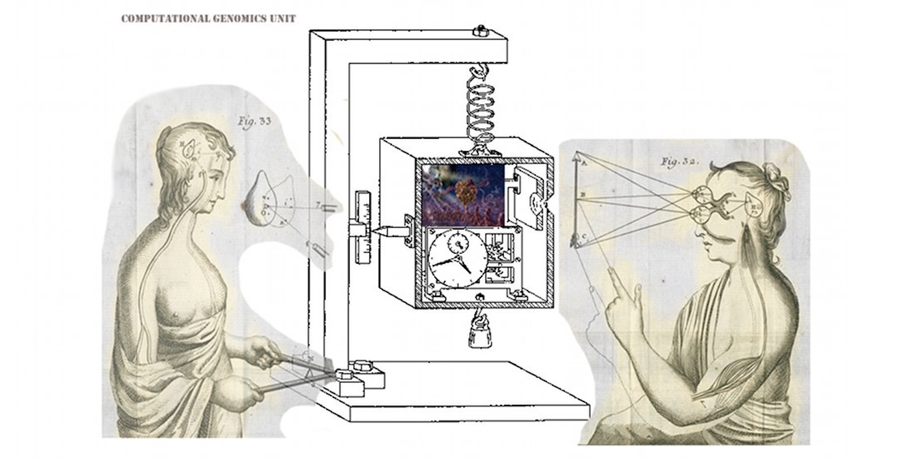

Michael Duff
Staff ScientistBiostatistics, Bioinformatics and Epidemiology program
Vaccine and Infectious Disease Division
Fred Hutchinson Cancer Research Center
Seattle WA
moduff@fredhutch.org
I'm a computational biologist focussed on analysis, modeling, and simulation of b-cell repertoire dynamics in response to infection and vaccination. Current research directions:
- receptor sequence bioinformatics
- somatic hypermutation models
- agent-based simulation of germinal centers
- elicitation of broadly-neutralizing antibodies
Selected publications
Van Nostrand, E.L., et al (2019) A Large-Scale Binding and Functional Map of Human RNA Binding Proteins bioxiv, To appear in Nature).
Garren, S., Duff, M.O., & Carmichael, G. (2015) Global analysis of mouse polyomavirus infection reveals dynamic regulation of viral and host gene expression and promiscuous viral RNA editing. PLOS Pathogens, 11(9), September 25.
Duff, M.O., Olson, S, Wei, X., Osman, A., Plocik, A., Bolisetty, M. Celniker, S. & Graveley, B.R. (2015) Genome-wide Identification of Zero Nucleotide Recursive Splicing in Drosophila. Nature 521, May 21, 376-9.
Yang L., Duff M.O., Graveley B.R., Carmichael G.G. and Chen L-L. 2011 Genomewide characterization of long nonpolyadenylated RNAs. Genome Biology, Feb 16.
Graveley, B.R. et al (2010). The developmental transcriptome of Drosophila melanogaster. Nature, Dec 22.


Duff, M.O. (2003) Design for an optimal probe. Proceedings of the 20th International Conference on Machine Learning 131-138.
Duff, M.O. (2001) Monte-Carlo Algorithms for the Improvement of Finite-State Stochastic Controllers. Eighth International Workshop on Artificial Intelligence and Statistics, Key West FL.
Duff, M.O. (1995)
Q-learning for bandit problems. Proceedings of the 12th International Conference on Machine Learning, 209-217.